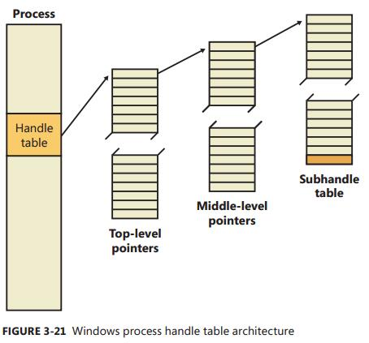
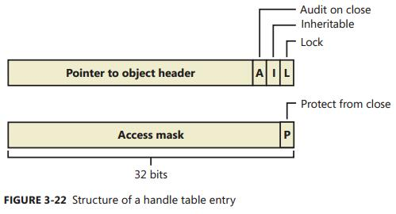
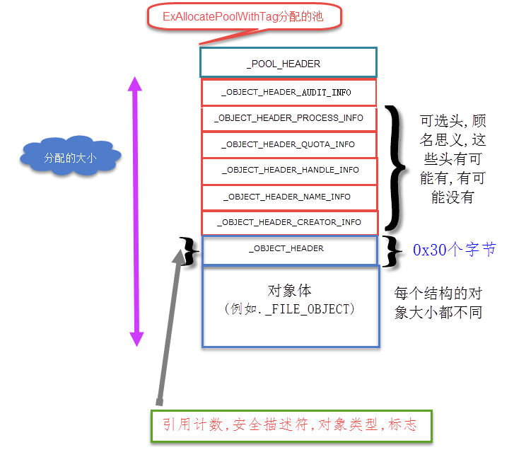

对象管理是 Windows Executive 的一个子系统实现, 用于管理 Windows 资源. 资源包括物理设备, 文件, 文件目录, 注册表条目, 正在运行的进程等等. 所有子系统访问资源都必须通过对象管理子系统.
对象实际上就是一组数据结构加操作(函数).
各种 Object 的共有的信息 (例如, 对象类型, 对象的引用计数, 句柄数等信息) 保存在 OBJECT_HEADER 与其他的几个结构中. 换而言之, 在对象管理器内部, 不同类型的对象具有相同的 Object Header, 但 Object Body 部分却是不同的.
Windows 有三种类型的对象: 内核对象 (Kernel objects) , 执行体对象 (Executive objects), 和 GDI/User 对象.
内核对象: 表示一些基本资源, 如物理设备, 同步服务等等. 用户态的程序不能访问内核对象.
执行体对象: 用户态的系统服务与应用程序使用执行对象, 这是 Windows Executive 对外暴露的对象, 用来封装一个或多个内核对象. 执行对象还用于实现 NT 子系统或 POSIX 子系统的一些功能.
用户对象: 每个对象仅有一个句柄, 句柄不能复制或继承, 不能引用其他用户会话中的进程的用户句柄. 任何进程只要有对某个用户句柄访问权限, 即可以访问该用户对象. 一个进程最多有 65536 个用户对象句柄.
用户对象包括: 快捷键表 HACCEL, 插入点光标, 鼠标指针 HCURSOR, DDE 会话, 窗口钩子, 图标 HICON, 菜单 HMENU, 窗口 HWND, 窗口位置.GDI 对象: 每个对象仅有一个句柄, 句柄为进程私有. 一个进程最多有 65536 个 GDI 对象句柄.
GDI 对象包括: 位图 HBITMAP, 画刷 HBRUSH, 设备环境 (DC) HDC, 增强型图元文件 (EMF) , EMF 设备环境, 字体 HFONT, 内存 DC, 图元文件, 图元文件 DC, 调色板 HPALETTE, 画笔 HPEN, 区域 (Region) HRGN.
Windows NT 暴露的执行对象
| 对象类型 | 结构 | 代表含义 |
|---|---|---|
| Process | _EPROCESS | 执行一组线程对象所必须的虚拟地址空间和控制信息 |
| Thread | _ETHREAD | 进程内部的一个可执行实体 |
| Job | _EJOB | 指一组进程, 通过作业机制, 可以像单个实体那样来管理他们 |
| Section | _SECTION_OBJECT | 共享内存的一个区域 (也称为 File mapping) |
| File | _FILE_OBJECT | 一个已打开的文件或者 I/O 设备的实例 |
| Token | _TOKEN | 一个进程或者线程的安全轮廓 (安全ID, 用户权限等) |
| Event | _KEVENT | 一种具有持久状态 (有信号或无信号的) 对象,可用于同步或者通知 |
| Semaphore | _KSEMAPHORE | 信号量是一个计数器, 提供资源门控制能力, 对于该信号量所保护的资源只允许某个最大数目的线程访问 |
| Mutex | _KMUTEX | 用于顺序访问一个资源的一种同步机制 |
| Timer | _ETIMER | 这是一种当固定长度的时间过去时通知某个线程的机制 |
| IoCompletion | 使线程能够将 “I/O 操作完成通知” 进出队列的一种方法 | |
| Key | _CM_KEY_BODY | 一种引用注册表中数据的机制. 虽然键出现在对象管理器的命名空间中, 但是却是由配置管理器来管理的, 其管理方式类似于文件系统驱动程序管理文件对象的方式. 与该键对象关联在一起的有零个或多个键值; 一个键值中包含有关该键的数据 |
| Directory | 对象管理器中命名空间的虚拟目录, 负责包含其他的对象或对象目录 | |
| TpWorkerFactory | 负责执行一组特定任务的线程集合. Windows 通过线程池的方式暴露工作者工厂对象 | |
| Tm (资源管理器), TmTx (事务), TmTm (事务管理器), TmEn (登记) | 内核事务管理器 (KTM) 为各种事物或登记而使用的对象, 他们是资源管理器或事务管理器的一部分. | |
| WindowStation | tagWINDOWSTATION | 该对象包含一个剪贴板, 一组全局原子, 一组桌面对象 |
| Desktop | tagDESKTOP | 这是一个包含在窗口站内部的对象. 它有一个逻辑显示器表面, 包含了窗口, 菜单 和 钩子. |
| PowerRequest | 该对象与一个线程关联在一起, 该线程执行 SetThreadExecutionState 调用请求指定的电源改变, 比如防止睡眠. | |
| EtwConsumer | 代表一个已连接的 ETW 实时消费者已经通过 StartTrace API 进行了注册 | |
| EtwRegistration | 代表一个注册对象, 它与某个用户模式(或内核模式) ETW 提供者关联 | |
| SymbolicLink | _OBJECT_SYMBOLIC_LINK | 被创建用来支持别名,这些别名可以来用帮助映射网络共享 |
| Type | _OBJECT_TYPE | 通过元数据来描述所有其他对象常见属性的一个对象 |
其他对象参考 Windows Object Categories
除了以上这些对象之外, 还有 Device, Driver, Adapter 等用于设备驱动的对象类型, 这些对象类型并由有专用的系统调用, 而是借用 NtCreateFile() 作为创建/打开的方法
对象结构


如图所示, 每个对象都有一个对象头和一个对象体. 每个对象头中有一个索引, 指向一个被称为类型对象的特殊对象, 该对象包含的信息对于它的每个实例是公共的.
另外,还可以有多达 7 个可选的子头:
- 名称信息头(
_OBJECT_HEADER_NAME_INFO) - 配额信息头(
_OBJECT_HEADER_QUOTA_INFO) - 进程信息头(
_OBJECT_HEADER_PROCESS_INFO) - 句柄信息头(
_OBJECT_HEADER_HANDLE_INFO) - 创建者信息头(
_OBJECT_HEADER_CREATOR_INFO) - 审计信息头(
_OBJECT_HEADER_AUDIT_INFO) - 填充信息头(
_OBJECT_HEADER_PADDING_INFO)
对象头
我们来看下对象头的定义:
|
|
Body 就是具体对象类型的数据结构本身, 即一个数据结构的起点.
对象头中的域
| 域 | 用途 |
|---|---|
| HandleCount | 维护一个计数值, 记录了当前打开打开的指向该对象的句柄数 |
| PointerCount | 维护一个计数值, 记录了该对象的引用个数 (每个句柄也算一次引用). 内核模式组件可以不通过句柄, 而直接用指针来引用对象. |
| SecurityDescriptor | 决定谁可以使用该对象, 以及允许他们如何使用它. (根据定义, 没有名称的对象是没有安全性的) |
| TypeIndex | 包含一个指向类型对象的索引, 该类型对象包含了这种类型对象的公共属性, 所有的类型对象都存储在 nt!ObTypeIndexTable 表中 |
| InfoMask | 可选头掩码, 除了创建者信息子头外, 只要存在, 就位于对象的前面. 该掩码通过 nt!ObpInfoMaskToOffset 表被转换成一个负的偏移;每个可选头都有一个与之关联的 1 字节索引, 将该可选头置于相对其他子头出现的位置 |
| Flags | 对象的特征和对象属性 |
| Lock | 针对每个对象的锁, 当修改该对象头部的域或者任何子头的域时, 需要用到该锁 |
| TraceFlags | 追踪开启标志, 用来调试引用计数问题 |
对象 Flags
| 属性标志 | 头标志 | 用途 |
|---|---|---|
| OBJ_INHERIT | 保存在句柄表项中 | 决定指向对象的句柄将来是否被子进程继承, 以及进程是否可以使用 DuplicateHandle 来执行句柄复制 |
| OBJ_PERMANENT | OB_FLAG_PERMANENT_OBJECT | 定义与引用计数相关的对象保持力行为 |
| OBJ_EXCLUSIVE | OB_FLAG_EXCLUSIVE_OBJECT | 决定一个对象只能被创建该对象的进程所使用 |
| OBJ_CASE_INSENSITIVE | 保存在句柄表项中 | 指定在命名空间中查找该对象应该按大小写无关的方式进行 |
| OBJ_OPENIF | 不保存, 仅在运行时使用 | 如果将此标志指定给创建对象的例程, 并且该对象已存在, 则例程应打开该对象. 否则, 创建对象的例程将返回 STATUS_OBJECT_NAME_COLLISION 的 NTSTATUS 代码. |
| OBJ_OPENLINK | 不保存, 仅在运行时使用 | 指定对象管理器应该打开一个指向符号链接的句柄, 而不是指向目标对象的句柄 |
| OBJ_KERNEL_HANDLE | OB_FLAG_KERNEL_OBJECT | 指定指向该对象的句柄应该是一个内核句柄 |
| OBJ_FORCE_ACCESS_CHECK | 不保存, 仅在运行时使用 | 指定即使该对象是用内核模式中打开的, 也要执行完全的访问检查 |
| OBJ_KERNEL_EXCLUSIVE | OB_FLAG_KERNEL_ONLY_ACCESS | 禁止任何用户模式进程打开指向该对象的句柄, 用于保护 /Device/PhysicalMemory 内存区对象 |
| - | OB_FLAG_DEFAULT_SECURITY_QUOTA | 指定该对象的安全描述符使用模式的 2KB 配额 |
| - | OB_FLAG_SINGLE_HANDLE_ENTRY | 指定句柄信息可选头仅包含一项, 而不是一个数据库 |
| - | OB_FLAG_NEW_OBJECT | 指定该对象已被创建, 但是尚未被插入到对象命名空间中 |
| - | OB_FLAG_DEFER_DELETE_INLINE | 指定该对象正在通过一个延迟删除的辅助线程删除 |
可选对象头
一个对象的可选头包含了用于描述该对象各种类型的元数据. 很明显, 因为它们是可选的, 所以并不是所有的类型的对象都拥有可选头;
甚至于相同类型对象的不同实例也可能包含可选头的不同组合.
这些结构的位置是从对象头的开始减去一个并不固定的偏移量, 此偏移值取决于与对象头相关联的可选头的数量.
对于所有可选头各种可能的情形, 都存在一个响应的偏移量, 但是因为可选头总是按照固定不变的顺序来分配,
所以对于一个给定的头, 它可能出现的位置的数量, 与优先于它而出现的最多可选头数量相同.
偏移的计算公式为:
| 名称 | 结构 | 掩位码 | 偏移 | 用途 |
|---|---|---|---|---|
| 创建者信息 | _OBJECT_HEADER_CREATOR_INFO | 0 (0x01) | ObpInfoMaskToOffset[0x01] | 对于所有同一类型的对象, 链接成一个列表, 并记录下创建该对象的进程, 以及一个后向跟踪项 |
| 名称信息 | _OBJECT_HEADER_NAME_INFO | 1 (0x02) | ObpInfoMaskToOffset[0x03] | 包含对象名称和一个指向对象目录的指针. 对象名称使用该对象对于其他进程也可见, 从而可以共享; 对象目录提供了存储对象名称的层次结构. |
| 句柄信息 | _OBJECT_HEADER_HANDLE_INFO | 2 (0X04) | ObpInfoMaskToOffset[0X07] | 包含一个进程项数据库 (或只有一项), 这些进程都有一个已打开的句柄指向该对象 (以及一个针对每个进程的句柄计数) |
| 配额信息 | _OBJECT_HEADER_QUOTA_INFO | 3 (0x08) | ObpInfoMaskToOffset[0x0F] | 列出了当一个进程打开指向该对象的句柄时需要消耗的资源花费 |
| 进程信息 | _OBJECT_HEADER_PROCESS_INFO | 4 (0x10) | ObpInfoMaskToOffset[0x1F] | 如果这是一个排它性对象, 则包含一个指向所有者进程的指针 |
| 审计信息 | _OBJECT_HEADER_AUDIT_INFO | 5 (0x20) | ObpInfoMaskToOffset[0x3F] | 未知 |
| 填充信息? | _OBJECT_HEADER_PADDING_INFO | 6 (0x40) | ObpInfoMaskToOffset[0x7F] | 未知 |
对象可选头出现的条件
| 名称 | 条件 |
|---|---|
| 创建者信息 | 对象类型必须已经打开维护类型列表标志. 如果驱动程序检验器被启用, 则驱动程序对象已设置此标志. 然而, 若全局标志维护对象类型列表打开, 所有对象的维护类型列表标志也随之打开, 类型对象总是设置该标志 |
| 名称信息 | 对象创建时必须指定名称 |
| 句柄信息 | 对象类型必须已打开维护句柄计数标志. 文件对象, ALPC 对象, 窗口站对象和桌面对象已在其对象类型结构中设置了此标志 |
| 配额信息 | 对象必须不是由初始系统进程或空闲进程创建的 |
| 进程信息 | 对象创建时必须指定排他性对象标志 |
| 审计信息 | 开启对象访问审核功能时使用? 本地组策略有这么个选项… |
| 填充信息 | 未知 |
“对象类型” 对象 (_OBJECT_TYPE)
对象类型对象包含一些对于某种特定类型的所有对象皆为常数的数据.
_OBJECT_HEADER 的 TypeIndex 成员是 nt!ObTypeIndexTable (一个类型对象 _OBJECT_TYPE 的数组) 的索引.
我们来看一下结构定义:
|
|
_OBJECT_TYPE 结构和 _OBJECT_TYPE_INITIALIZER 结构中的域:
| 域 | 用途 |
|---|---|
| Name | 类型对象的名称 (Process, Event, Port 等等) |
| PoolType | 指明了这种类型的对象应该从换页的还是非换页的内存分配 |
| DefaultPagedPoolCharge & DefaultNonPagedPoolCharge | 默认的配额花费, 默认从进程配额中扣除的换页内存值和非换页内存值 |
| ValidAccessMask | 线程在打开某个指向该类型的对象时, 可以请求的访问类型 |
| GenericMapping | 通用访问权限的映射关系, 在四种通用的访问权限和特属于该类型的访问权限之间的映射关系 |
| ObjectTypeFlags | 对象标志, 具体标志在结构中已注解 |
| ObjectTypeCode | 用于描述这种对象的类型 (对应于另一种方法, 比较名称值). 文件对象设置该类型码为 1, 同步对象设置为 2, 线程对象设置为 4, ALPC 也利用该域来保存一条消息关联的句柄属性信息 |
| InvalidAttributes | 指明了对象属性标志对此对象类型无效 |
| DefaultObject | 指定了在等待此对象过程中应该使用的对象管理器内部事件(如果对象类型创建者请求一个默认对象的话). 注意: 特定的对象, 比如文件对象和 ALPC 端口对象, 已经包含了他们自己内嵌的分发器对象. 在这种情况下, 该域是对象体内部的偏移量. 例如, FILE_OBJECT 结构内部的事件位于内嵌的 Event 域中. |
| XXXXProcedure | 在一个对象的生命期的特点上, 对象管理器自动调用一个或者多个例程来满足功能 |
对象方法
_OBJECT_TYPE_INITIALIZER 结构中 XXXXProcedure 域, 即方法, 是一组内部例程构成的.
之所以设计这些对象方法, 是为了针对这样的事实: 某些特定的对象操作是通用的 (关闭, 复制, 安全等). 要将这些通用的操作完全一般化将要求对象管理器设计者必须预知所有的对象类型.
对象方法:
| 方法 | 何时调用 |
|---|---|
| Open | 当对象句柄被打开时 |
| Close | 当对象句柄被关闭时 |
| Delete | 在对象管理器删除对象之前 |
| QueryName | 当线程请求在一个从属命名空间中查询一个对象的名称时(比如文件对象) |
| Parse | 当对象管理器在一个从属命名空间中搜索一个对象名称时 |
| Dump | 未使用 |
| OkayToClose | 当对象管理器接到指令要关闭句柄时, 针对恶意或者不正确关闭句柄的一个额外保护层 |
| Security | 当进程读取或改变一个对象在其从属命名空间中的保护属性时 |
这一规则的一个例外是安全(Security)例程, 该例程除非另行指明, 否则默认指向 SeDefaultObjectMethod. 此默认例程不需要知道对象的内部结构, 因为它只处理对象的安全描述符.
而安全描述符的指针存储在所有对象都适用的对象头, 而不是对象体中.
对象句柄和进程句柄表
当一个进程根据名称来创建或者打开一个对象时, 它接收到一个句柄, 代表了对此对象的访问. 句柄的设计使得应用程序不用直接与系统数据结构打交道.
对象句柄还提供了额外的好处:
- 除了所指向的内容不同, 文件句柄, 事件句柄和进程句柄没有区别, 使得可以用一个统一的接口来引用对象, 而无须关心类型.
- 对象管理器有独占的权限来创建句柄, 以及找到一个句柄所指的对象. 意味着可以审查调用者的权限.
对象句柄是一个索引, 指向进程特定的句柄表中的表项, 在 _EPROCESS->ObjectTable 中指向进程的句柄表.
第一个句柄索引是4, 第二个是8, 依此类推.
系统组件和设备驱动程序通常需要打开一些不应该让用户模式应用程序访问的对象句柄, 这可以通过在内核句柄表(nt!ObpKernelHandleTable)中创建句柄来实现.
该表中的句柄只有在内核模式下才可以访问, 但是可以在任何一个进程的环境下. So, 不会招致任何性能影响.
另外, 内核句柄会被置标志位 KERNEL_HANDLE_MASK.
在 x86 系统中, KERNEL_HANDLE_MASK = 0x80000000, 在 x64 系统中 KERNEL_HANDLE_MASK = 0xFFFFFFFF80000000.
另外,
PspCidTable这个PID表中的_HANDLE_TABLE_ENTRY指向的是对象体, 而_EPROCESS->ObjectTable指向的是对象头.
一个进程的句柄表包含了所有已被该进程打开了句柄的那些对象的指针, 句柄表的实现方式是一个三层结构, 类似于x86内存管理单元实现的从内存地址到物理地址的转译方式.
子句柄表中包含的表项的数据等于能填满一页的表项数减去一项, 这一项用于处理审计.
句柄结构
句柄表项是通过句柄来索引的, 所以我们先看一下句柄的结构
|
|
句柄表结构

|
|
TableCode 域是一个指针, 指向句柄表的最高层表项页面, 它的低 2 位的值代表了当前句柄表的层数.
也就是说, 如果 TableCode 的最低 2 位为0, 说明句柄表只有一层, 此种情况下该进程最多只能容纳 LOWLEVEL_THRESHOLD 个句柄, 即 TableCode 指向一个底层句柄表页面, 该页面是一个句柄表项(nt!_HANDLE_TABLE_ENTRY)的数组;
如果 TableCode 的最低 2 位为 1, 则说明句柄表有两层, 此种情况下该进程可容纳的句柄数是 MIDLEVEL_THRESHOLD, 即 TableCode 指向一个中层句柄表页面, 该页面包含 MIDLEVEL_COUNT 个指针, 每个指针指向一个低层句柄表页面;
如果 TableCode 的最低 2 位为 2, 则说明句柄表有三层, 此种情况下三层结构可容纳的句柄数是 HIGHLEVEL_THRESHOLD. 即 TableCode 指向一个高层句柄表页面, 该页面包含 HIGHLEVEL_COUNT 个指针, 每个指针指向一个中层句柄表页面;
但Windows 执行体限定每个进程的句柄数不得超过 MAX_HANDLES.
TableCode 可以理解成是 _HANDLE_TABLE_ENTRY 多维数组.
下面是相关的几个宏定义
|
|
好, 现在我们来看一下 ExpLookupHandleTableEntry 是怎么实现根据 HANDLE 从 HandleTable 中找到 HandleTableEntry 的.
这个代码是自己逆向 Windows 8.1 x64 来的. 除了比 WRK 的简洁点, 实际上是一样的.
|
|
句柄表项结构

句柄表项的标志位含义:
- L: 锁标志位,说明了该表项当前是否正在使用.
- I: 继承标志位, 指明了该进程创建的进程是否可以在其句柄表中有一份该句柄的副本.
- A: 审计标志位, 关闭该对象时是否应该产生一个审计消息
- P: 关闭保护标志位, 此位保存在访问掩码的未使用部分, 指明了调用者是否允许关闭该句柄.(NtSetInformationObject 系统调用来设置.)
|
|
内核对象的地址算法:
|
|
其中, 在普通的句柄表项里面存储的是对象头, 所以得到对象体要加上对象头的大小; 而在 PspCidTable 中的句柄表项里面存储的是对象体;
那么, 这个算法是怎么得到的呢? 在 ObReferenceObjectByHandleWithTag 函数中调用了 ObpReferenceObjectByHandle 来根据句柄得到对象的.
但是我逆向 ObpReferenceObjectByHandle 函数, 只发现了一半的处理?? 还差 or 0xFFFF000000000000 的代码?? 如果有哪位同学知道, 麻烦告知一下~~
这行就是我逆向 ObpReferenceObjectByHandle 得到的核心代码, 但是只能得到不完整的地址..
|
|
用 Windbg 从 Handle 得到 Object
好~ 那么, 我们就来用 Windbg 来验证一下前面研究的成果好了~
|
|
对象名称
在创建一群对象时, 一个重要的考虑是, 有必要设计一个成功的系统来跟踪记录这些对象. 为对象命名便是实现方案.
为了提高效率, 对象管理器只在两种情况下才查找一个名称:
- 当一个进程创建一个命名的对象时, 对象管理器在把新的名称存储到全局命名空间以前, 首先查找此名称. 排除重复.
- 当一个进程打开一个指向命名对象的句柄时, 对象管理器查找该名称.
对象目录
对象目录对象是对象管理器支持这种层次状命名结构的方法. 该对象类似于文件系统中的目录, 包含了其他对象的名称, 甚至可能包含其他的对象目录.
对象的名称存储在哪里取决于对象的类型.
标准对象目录:
| 目录 | 所存储的对象名称的类型 |
|---|---|
| \ArcNames | 将 ARC 风格的路径映射到NT风格路径的符号链接 |
| \BaseNamedObjects | 全局的互斥体, 事件, 信号量, 可等待的定时器, ALPC 端口, 符号链接和内存区对象 |
| \Callback | 回调对象 |
| \Device | 设备对象 |
| \Driver | 驱动对象 |
| \FileSystem | 文件系统驱动程序对象和文件系统识别器设备对象. 过滤器管理器也在 Filters 子键下创建它自己的设备对象 |
| \GLOBAL?? | MS-DOS 设备名称 (\Session\0\DosDevices\ |
| \KernelObjects | 包含了可在某些特定条件下发出信号的事件对象: 低资源条件, 内存错误, 特定操作系统任务的完成; 也包含了代表会话的对象 |
| \KnownDlls | 已知DLL(在启动时由系统映射的DLL)的内存区名称和路径 |
| \KnownDlls32 | 用于 Wow64 版本的已知DLL |
| \Nls | 已映射的国家语言支持表的内存区名称 |
| \ObjectTypes | 对象类型的名称 |
| \PSXSS | 如果 UNIX 应用子系统被启用 (通过安装 SUA 组件), 则该目录包含了 UNIX 应用子系统所用到的 ALPC 端口 |
| \RPC Control | 远程过程调用所使用的 ALPC 端口, 和作为控制台隔离机制一部分的 Conhost.exe 所使用的事件 |
| \Security | 安全子系统的对象的名称所使用的 ALPC 端口和事件 |
| \Sessions | 针对每个会话的命名空间目录 |
| \UMDFCommunicationPorts | 用户模式驱动程序框架 (UMDF) 使用的 ALPC 端口 |
| \Windows | Windows 子系统的 ALPC 端口, 共享的内存区和窗口站 |
因为注入互斥体, 事件, 信号量, 可等待的定时器, 以及内存区这些基本内核对象将它们的名称存储在同一个对象目录下, 所以对象名称有可能被占用 (或者占坑攻击).
Windows 采用了私有命名空间的概念来缓解这一问题. 它允许用户模式应用可以通过 CreatePrivateNamespace API 来创建对象目录, 并将对象目录关联上边界描述符.
这里的边界描述符是一些用来保护这些目录的特殊数据结构, 其中包含了代表那些安全个体可以访问这些目录的 SID. 类似安全描述符.
对象目录结构
|
|
目录对象是一个有 37 个数组元素组成的哈希树,数组元素的类型是 _OBJECT_DIRECTORY_ENTRY.
我们以 “\”(ObpRootDirectoryObject) 根目录对象来看一下对象目录结构
|
|
Directory 下的所有对象通过一个 Hash 算法定位其在 HashBuckets 的哪条链表中, _OBJECT_DIRECTORY_ENTRY 通过 ChainLink 组成链表, 如果为 NULL 则表示为该链表最后一个项.
内核池
内核池是可以被分割为更小块的用于存储任何类型的数据–内核模式组件(NT内核模块, 第三方设备驱动等等), 请求的一系列内存.
与堆比较相似, 每个分配的块都有一个包含统计和调试信息的头(_POOL_HEADER), 我们可以使用这些额外的数据来推断出该内存块属于哪个驱动程序, 并且我们还可以在一定程序上推断出包含该分配内存的结构或者对象的类型.

|
|
Windows 8.1 具有 46 种不同类型的内核对象, 所有这些内核对象都从两个池中的一个池分配, 即PagedPool和NonPagedPoolNx. 下面我们对每个对象的池类型做个总结
在前面, 我们学习过了对象目录, 所以我们可以直接使用 Windbg 的 !object \ObjectTypes 命令列出所有对象类型, 并查看其中一些对象的池类型
|
|
另外说一下,
!object \ObjectTypes命令中, 列出的 hash 值实际上就是\ObjectTypes对象目录中, HashBuckets 里面的数组索引.
那么我已经总结好成一张表格了
| Pool Type | Object |
|---|---|
| NonPagedPoolNx | TmTm, Desktop, Process, DebugObject, TpWorkerFactory, Adapter, WmiGuid, EtwRegistration, Session, Timer, Mutant, IRTimer, IoCompletion, WindowStation, Profile, File, Semaphore, EtwConsumer, CompositionSurface, TmTx, FilterConnectionPort, Callback, WaitCompletionPacket, UserApcReserve, Job, Controller, IoCompletionReserve, Device, TmEn, Thread, Type, FilterCommunicationPort, PowerRequest, TmRm, Event, ALPC Port, Driver |
| PagedPool | Token, DxgkSharedResource, PcwObject, DxgkSharedSyncObject, SymbolicLink, Key, KeyedEvent, Directory, Section |
引用参考
利用Volatility进行Windows内存取证分析(二)：内核对象、内核池学习小记
Windows 7 Object Headers